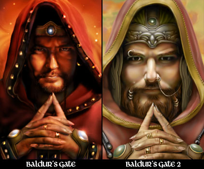
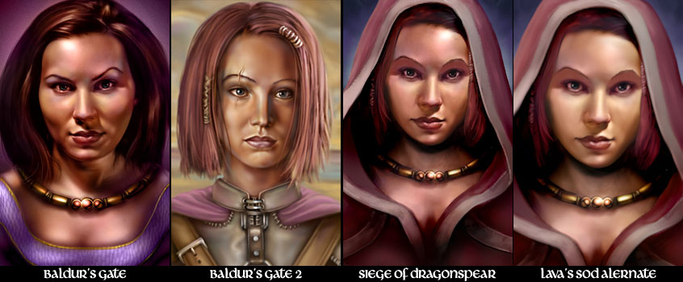
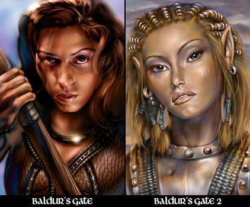
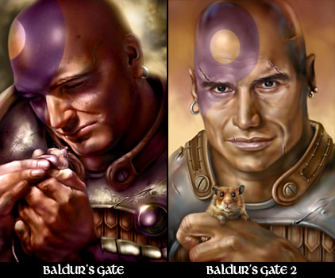
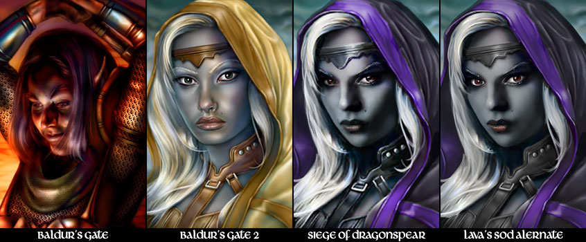

- Présentation
- Compatibilité
- Rapport de bogues
- Installation
- Composants
- Contacts
- Remerciements
- Crédits
- Historique
Continuité des portraits des PNJ
Un mod Gibberlings Three
Auteur : CamDawg
Version 3
Langues : Anglais, Français
Plateformes : Windows, macOS, Linux
GitHub : Gibberlings3/Continuous_NPC_Portraits
Dans la saga des jeux Baldur's Gate, cinq PNJ disposent de portraits officiels. Edwin, Imoen, Jaheira, Minsc et Viconia ont des portraits différents dans BG et BG2 ; Imoen et Viconia ont même un troisième portrait dans Siege of Dragonspear. Ce mod permet de choisir d'utiliser n'importe lequel de ces portraits dans n'importe quel jeu. Vous pouvez ainsi utiliser le portrait d'Imoen de BG dans BG2, celui de Viconia de SoD dans BG.
C'est une suggestion de Luke93 pour un composant du mod BG1 NPC Project qui est à l'origine de ce mod. AstroBryGuy m'en a fait part, et après un petit après-midi de codage... Voilà.
Ce mod est conçu pour fonctionner sur les versions originales et améliorées de Baldur's Gate et Baldur's Gate II, ainsi que sur l'extension Siege of Dragonspear et les mods de conversion qui incluent ces PNJ (EET, BGT et Tutu).
Jusqu'à présent, aucun problème de compatibilité n'a été signalé. Notez cependant que ce mod se contente de remplacer les portraits des PNJ. Si un mod modifie le nom de ces fichiers, vous ne constaterez aucune modification dans le jeu.
Si vous rencontrez des bogues, veuillez les signaler à son auteur dans le forum de G3 Miscellaneous Released Mods. Par ailleurs, Continuité des portraits des PNJ est disponible sur GitHub, où la communauté peut soumettre des correctifs et des modifications.
C'est la première fois que vous installez un mod ? Alors veuillez consulter ce tutoriel didactique : A New Player’s Guide to Installing and Playing Mods.
Note spéciale pour Siege of Dragonspear fourni par Steam/GOG
Good Old Games (GOG) et Steam fournissent le contenu de Siege of Dragonspear dans un format que WeiDU, l'outil utilisé pour installer ce mod, ne peut pas reconnaitre. Vous devez donc lancer l'utilitaire DLC Merger dans votre répertoire de SoD avant d'installer ce mod, ou tout autre mod utilisant WeiDU.
Note pour les jeux en Édition Améliorée (EE)
Les Éditions améliorées sont des jeux que le développeur fait encore évoluer, notamment par l'ajout de capacités supplémentaires destinées à la création de mods et par l'ajout de contenus. N'oubliez pas que chaque patch de mise à jour effacera les mods que vous avez installés ! Ce mod ne fera pas exception à la règle.
Si vous pouvez retarder la mise à jour du patch en plein milieu d'un partie moddée (si vous en avez la possibilité, notamment chez Beamdog et Good Old Games), n'oubliez pas que même après avoir réinstallé les mods sur un nouveau patch, vous ne pourrez peut-être pas continuer le jeu avec vos anciennes sauvegardes, en particulier à cause de noms de personnages, de lieux, etc, qui pourraient être incorrects. Pour y remédier, copiez tout le dossier du jeu dans un nouveau dossier dans lequel vous installerez vos mods, et qui ne sera pas modifié par les patches de mise à jour. Il est important que vous installiez le mod dans la version linguistique dans laquelle vous jouez. Sinon, les dialogues du mod ne s'afficheront pas et provoqueront des messages d'erreur.
Windows
Continuité des portraits des PNJ pour Windows est livré et installé avec WeiDU, et est diffusé sous forme d'archive auto-extractible. Pour l'installer, il suffit de double-cliquer sur l'archive et de suivre les instructions affichées à l'écran.
Autrement, vous pouvez extraire les fichiers de l'archive dans votre répertoire de jeu (le dossier qui contient le fichier CHITIN.KEY) à l'aide de 7zip ou WinRAR. Une fois l'archive extraite correctement, vous devriez trouver le fichier setup-cdportraits.exe et le répertoire cdportraits dans votre répertoire de jeu. Pour installer le mod, il suffit de double-cliquer sur setup-cdportraits.exe et de suivre les instructions affichées à l'écran.
Vous pouvez lancer setup-cdportraits.exe dans votre répertoire de jeu pour réinstaller, désinstaller, ou encore changer des composants.
macOS
Continuité des portraits des PNJ pour macOS est livré et installé avec WeiDU, et est diffusé dans une archive compressée de type tarball.
Extrayez le contenu de l'archive dans votre répertoire de jeu. Après une extraction réussie, ce dernier contiendra les fichiers setup-cdportraits, setup-cdportraits.command, et le répertoire cdportraits. Pour installer le mod, il suffit de double-cliquer sur setup-cdportraits.command et de suivre les instructions affichées à l'écran.
Vous pouvez lancer setup-cdportraits.command dans votre répertoire de jeu pour réinstaller, désinstaller, ou encore changer des composants.
Linux
Continuité des portraits des PNJ pour Linux est diffusé dans une archive compressée de type tarball, mais sans l'installateur WeiDU. Vous devrez donc installer une fois pour toutes WeiDU (et effectuer quelques manipulations) comme décrit dans cet excellent article.
Pour installer le mod, lancez 'weinstall cdportraits' depuis le dossier de votre jeu.
Note pour effectuer une désinstallation complète
En plus des méthodes détaillées plus haut pour supprimer des composants, il est possible de désinstaller complètement le mod en tapant setup-cdportraits --uninstall dans une ligne de commandes, ce qui supprimera tous les composants sans devoir ingurgiter tous les messages.
Le mod Continuité des portraits des PNJ comprend cinq composants, un pour chaque PNJ, qui peuvent être installés de manière indépendante. Vous pouvez choisir d'utiliser les portraits de BG ou de BG2 pour chaque PNJ ; et même celui de SoD pour Imoen et Viconia.
Edwin
Deux options pour Edwin :

Imoen
Imoen dispose de quatre options, décrites plus bas : les trois portraits officiels de BG, BG2 et Siege of Dragonspear. La quatrième option est une création de Lava, un portrait alternatif pour la campagne Siege of Dragonspear. Vous pouvez remplacer son portrait par n'importe lequel des quatre, ou choisir simplement de remplacer le portrait de Imoen dans SoD par celui de Lava.

Jaheira
Deux options pour Jaheira :

Minsc
Deux options pour Minsc :

Viconia
Viconia dispose de quatre options, décrites plus bas : les trois portraits officiels de BG, BG2 et Siege of Dragonspear. La quatrième option est une création de Lava, un portrait alternatif pour la campagne Siege of Dragonspear. Vous pouvez remplacer son portrait par n'importe lequel des quatre, ou choisir simplement de remplacer le portrait de Viconia dans SoD par celui de Lava.

Pour tout problème ou toute suggestion,veuillez contacter l'auteur, CamDawg. Vous trouverez aussi de plus amples informations sue ce mod sur le forum Miscellaneous Released Mods ou sur la page du projet. N'hésitez pas non plus à consulter le forum Gibberlings Three pour obtenir toute information sur ce mod ou d'autres mods Gibberlings Three sur lesquels nous travaillons.
L'idée de ce mod a germé d'une suggestion effectuée par Luke93 et adressée à AstroBryGuy sur le forum au sujet du BG1 NPC Project, qui m'a été confiée ensuite. Merci à Luke93 pour l'idée, et à AstroBryGuy pour m'avoir prévenu.
Merci à Lava, de Weasel Mods, pour les magnifiques portraits alternatifs de Viconia et d'Imoen.
Et comme d'habitude, un ennorme merci à la communauté The Gibberlings Three. C'est toujours tellement plus facile de travailler avec des joueurs et des moddeurs de qualité.
Logiciels et outils utilisés pour la réalisation de ce mod
- WeiDU de Wes Weimer, the bigg et Wisp.
- Near Infinity de Jon Olav Hauglid, FredSRichardson et Argent77.
- Notepad++ par l'équipe de Notepad++.
- WeiDU Notepad++ Highlighters de cmorgan, mis à jour par Argent77.
- IESDP maintenu par igi et lynx.
La communauté de modding sur le moteur Infinity Engine a été très active depuis plus de vingt ans maintenant, et a produit des milliers d'heures de travail non rémunérées effectuées par des fans du jeu. Les moddeurs s'efforcent de publier le meilleur de leur travail, et les joueurs bénéficient des mods les plus performants et les mieux maintenus, à condition que nous travaillions tous dans le même sens.
Mais cette harmonie peut malheureusement être perturbée, principalement par deux comportements. Le premier, c'est de revendiquer le travail de quelqu'un d'autre. Le second consiste à héberger et à redistribuer un mod sans la permission de son(es) auteur(s).
Soyez assez sympa avec vos collègues joueurs et moddeurs. Ne le faites pas.
Note du traducteur : l'historique n'est volontairement pas entièrement traduit afin de faciliter la mise à jour continue du mod.
Version 3 - March 7, 2022
- Added French translation (Gwendolyne)
- Readme: fixed out-dated links
- Added fourth Imoen option from Lava
Version 2 - February 5, 2022
- Added Lava's Viconia alternate portrait
- Added hooks for Project Infinity
Version 1 - October 12, 2018
- Initial release